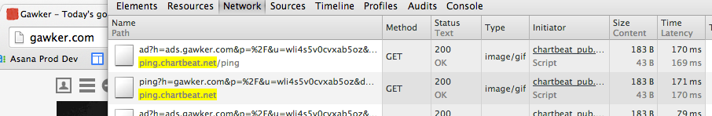
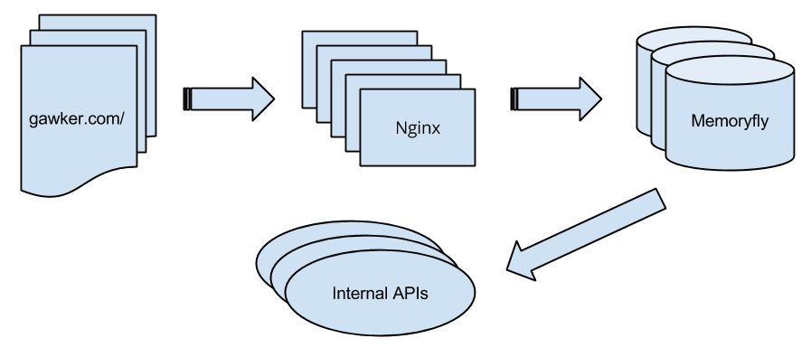

Meta
These are the notes for a talk I gave at the Full Stack Engineering Meetup in NYC on Nov 26, 2013. You can reach me at wes@chartbeat.com, follow @weschow, or read random thoughts here. This talk's rendered html can be found at http://wesc.github.io/talks/lua_at_cb/, or you can directly view the source files at https://github.com/wesc/talks/tree/gh-pages/lua_at_cb.
Chartbeat provides real-time analytics and intelligence, with a focus on the publishing world. We run on 80% of major news sites (New York Times, Wall Street Journal, etc), and show them insights on how users are engaging with their content, generally with latencies measured in fraction of a second to a few seconds.
Lua is a small, fast, and easily embeddable scripting language. It strives for simplicity, comprehensibility, speed, and easy+efficient interfacing with C/C++ programs. These qualities have made it popular as a scripting language for games and embedded systems.
Lua has an official implementation maintained by the desginers at PUC-Rio, and a second implementation by Mike Pall called LuaJIT. We use LuaJIT embedded into Nginx and Memoryfly, an in-house complex event processing system that is the brain of Chartbeat.
When a visitor loads a page of one of our customer's pages, our Javascript runs and starts sending us little pieces of information, called pings, about what the user is doing.

In particular, we're interested if the user is scrolling the screen, moving the mouse, or typing. We call this activity engaged time.
This results in a peak load on an average day of 140,000 pings per second. The pings arrive on a cluster of Nginx machines, which are configured to route them to Memoryfly shards based on domain. Memoryfly processes the pings and provides statistics, histograms, etc that power the Chartbeat dashboard. Internal APIs query Memoryfly for their data.

We aggregate then throw away the vast majority of our ping data. For some applications, though, we need complete ping history, but keeping around every ping is just too much data. Instead, we log a subset of all visitors. To avoid pushing huge amounts of unnecessary data through our system, we sample as early in the pipeline as possible, thus in Nginx.
The lua-nginx-module allows you to write an Nginx request handler in Lua. It interfaces via Nginx's config stanzas:
1 2 3 4 5 6 7 8 9 10 11 12 | location = /test { content_by_lua ' local args = ngx.req.get_uri_args() for key, val in pairs(args) do if type(val) == "table" then ngx.say(key, ": ", table.concat(val, ", ")) else ngx.say(key, ": ", val) end end '; } |
lua-nginx-module gives a set of interfacing functions to Nginx. For
example, ngx.say outputs text as the response body to the
client. ngx.req is an object that provides accessor methods for data
inside of the HTTP request.
Our sampling code, then, looks approximate like this:
1 2 3 4 5 6 7 8 9 10 11 12 13 14 15 16 17 18 19 20 21 | local function process_ping() local ctx = {} ctx.args = ngx.req.get_uri_args() ctx.req_time = ngx.now() ctx.user_agent = ngx.var.http_user_agent or "" ctx.remote_addr = ngx.var.remote_addr ctx.http_referrer = ngx.var.http_referer ctx.query_string = ngx.var.args ctx.u_key = ctx.args["u"] -- uniquely identifies a user local rate = 0.01 local scale_factor = 100000 local u_key_hash = mmh3_32(ctx.u_key, string.len(ctx.u_key)) -- 32-bit Mumurhash local sample_worthy = (u_key_hash % scale_factor) < (rate * scale_factor) if sample_worthy then -- build log line to be shipped elsewhere for processing line = build_ping_log_line(ctx) logging.writeln(line) end end |
What is performance like? Our Nginx servers are IO bound, so in practice the Lua code hasn't added any noticeable overhead. This code regularly serves over 6,000 requests per second. But suppose it did impact CPU use. That's an easy problem to solve -- run more Nginx servers.
Memoryfly is a C/C++ application for processing pings as they stream in. The development pattern for Memoryfly is traditionally:
Product team says, "hey it'd be great if we could compute X."
Developer works on function for X.
Developer rebuilds Memoryfly.
Developer tests.
Repeat 2 - 4.
Developer blesses code, then deploys new version of Memoryfly with X.
We patiently await requisite segfault and crummy backtrace.
Attach gdb to core, debug.
Repeat 2 - 8 until nirvana is reached.
In other words, your typically slow and painful development cycle for a language lacking basic privileges of human civilization like garbage collection.
To ease the development process, we embedded LuaJIT into Memoryfly and exposed a ping iteration mechanism to Lua, accompanied by a mechanism to take the return from a Lua function and convert it into an HTTP response. This is sample code for calculating mobile vs. desktop usage for some particular domain:
1 2 3 4 5 6 7 8 9 10 11 12 13 14 15 16 17 18 19 | local desktop = 0 local mobile = 0 for ping in ping_iter() do -- the 'P' key tells us if the ping was mobile or not local ping_platform = ping:string_key('P') -- count up mobile vs desktop pings if ping_platform ~= 'm' then mobile = mobile + 1 else desktop = desktop + 1 end end return json.encode({ mobile=mobile, desktop=desktop, }) |
We can upload Lua code into Memoryfly in real time, which will then execute and return results immediately.
Pros:
Lua is considerably easier and quicker to learn than C, so it widens the possible set of developers who can implement Memoryfly APIs.
It's much harder to make Lua crash.
Debug cycle for API development is much faster. We have a handy web page that allows developers to edit Lua code, submit to Memoryfly, and get results back.
Because we iterate through all data, we can make arbitrary calculations. Where we previously had to specialize Memoryfly APIs to allow for data pivots in specific dimensions, we now allow our customers to arbitrarily pivot on any data.
It's very fast. Almost as fast as hand written C in most cases, faster in some.
Cons:
(caveat) Memoryfly is single threaded. To prevent buggy Lua code from causing a denial of service, Memoryfly times the run and kills it if it takes too long. Memoryfly also throttles the number of Lua functions it runs to make sure it doesn't accidentally accumulate a backlog of unprocessed pings.
String manipulation in Lua is slow, so APIs that do too much of that see perverse performance characteristics.
Lua itself is a quirky language: no integers, 1-indexed arrays, well, no arrays for that matter as tables are the only data structure.
Module system isn't fully fleshed out. There are competing methods, and it seems like the community is figuring it out, however this makes developing larger programs cumbersome. Because we're injecting small programs into a larger system, it doesn't matter to us.
Lua has served us great in a very limited role.
Vastly sped up development. Easy to learn, easy to embed.
Given us flexibility to compute things we couldn't compute before.
Very high performance, and it's done what we need it probably about as fast as if we'd done it by hand.